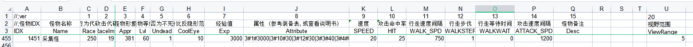

采集功能格式:
SHOWPROGRESSBARDLG 时间(秒) 触发字段 提示信息 有动作是否中断(0不中断,1中断)
中断触发字段
使用示例：
[@Main]
#ACT
SHOWPROGRESSBARDLG 5 @采集完成 正在采集,进度%d%... 1 @采集中断
Break
QF触发
[@采集完成]
#ACT
Give 回城卷 1
SendMsg 5 你采集一个回城卷
Break
[@采集中断]
#ACT
SendMsg 5 采集被中断
Break
采集类怪物
格式：Race=250(怪物不移动,不攻击;人物和宝宝不能攻击此类怪
) 怪物能否回血
自行配置Monster.xls表RehealthCd字段
说明：玩家点击怪物将会触发QF的[@CollectMonX]其中X代表Monster.xls怪物ID，视野范围ViewRange字段作为可以触发脚本的范围，为0代表不检测，如果超过范围触发QF的[@CollectMonFailX]

[@采集完成]
#IF
#ACT
;根据怪物唯一ID触发QF
CAIJIBYPARAM
<$Str(S10)>
[@CollectMon1451]
#IF
CheckLevel >
0
#ACT
Give 金条
M.HUMANHP - 10000000
SendMsg 5 你探索到了一个金条!
[@采集中断]
#IF
#ACT
SENDMSG 7
你的采集被打断
;超过范围触发脚本如下:
[@CollectMonFail1451]
#act
sendmsg 9
你离着太远了，靠近一点再采集！